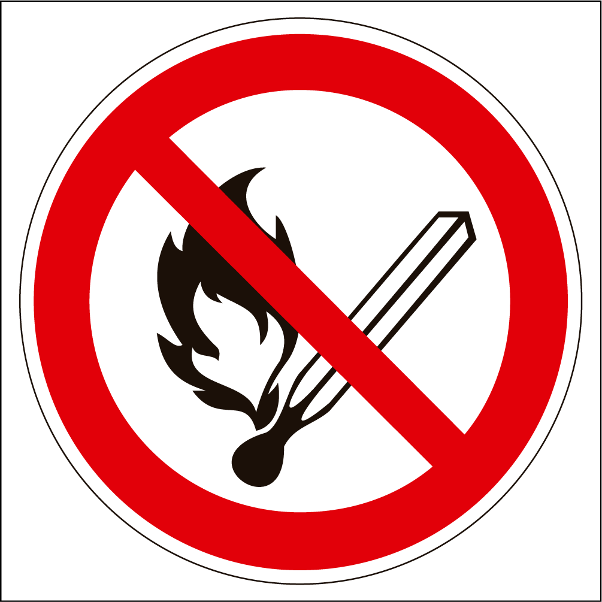
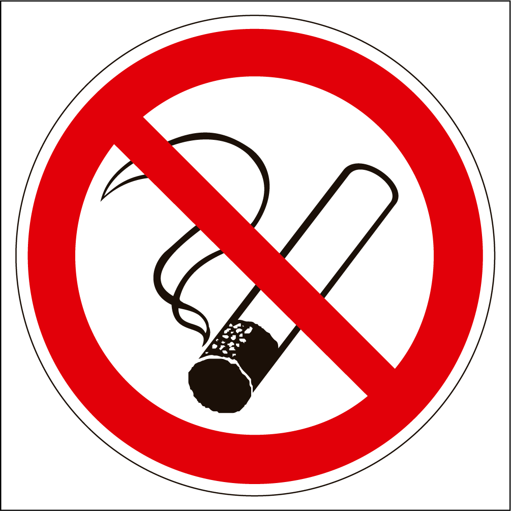
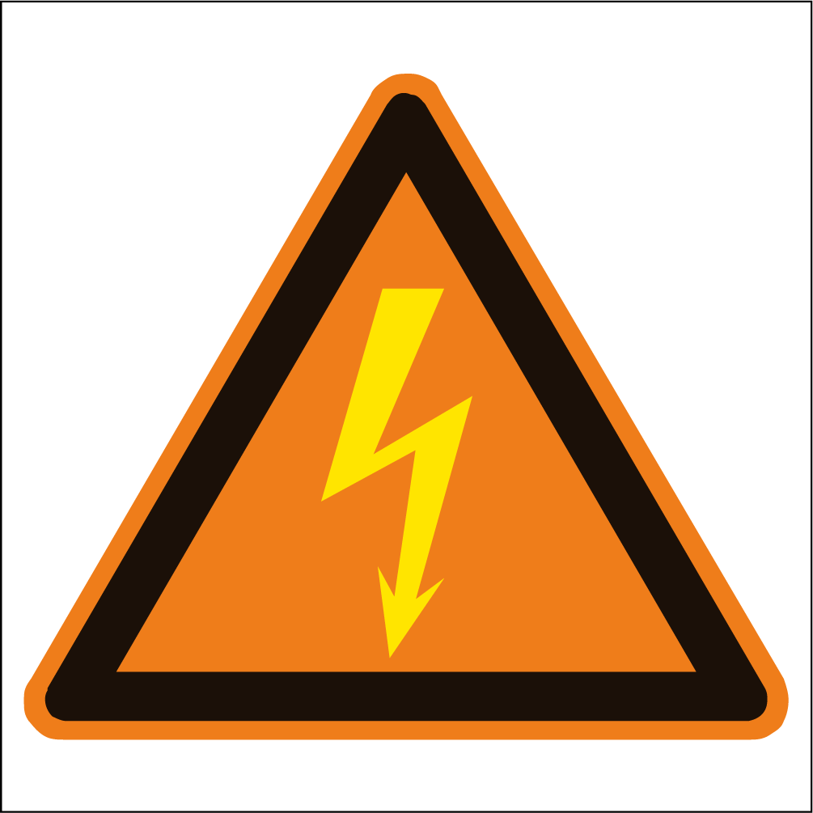
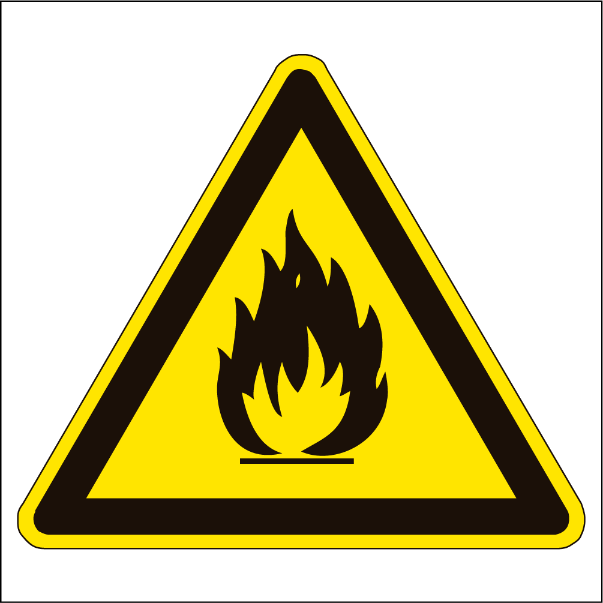
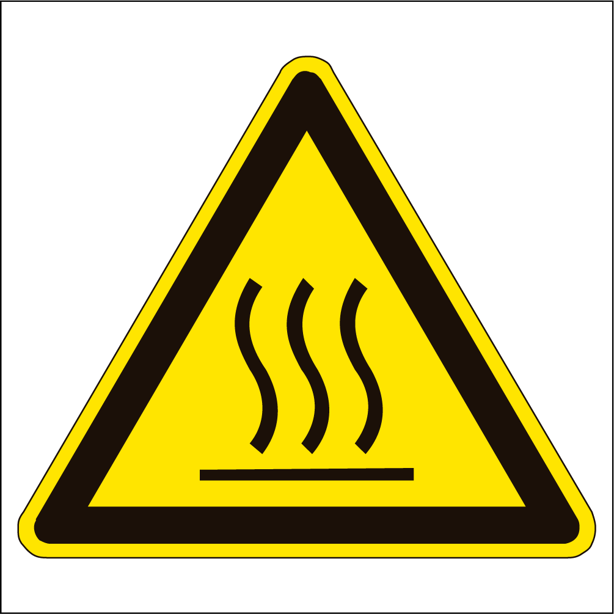
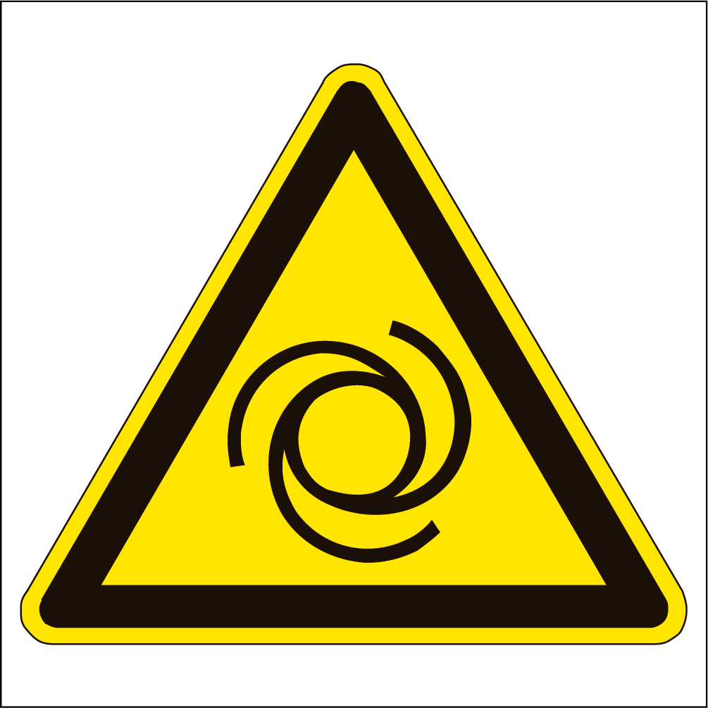
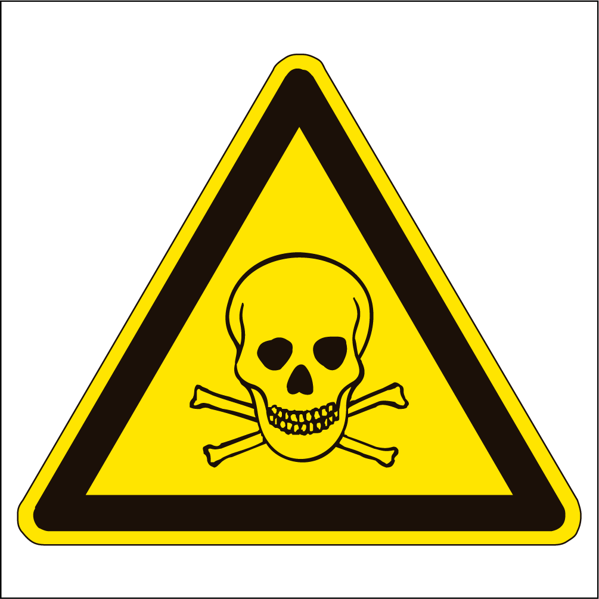
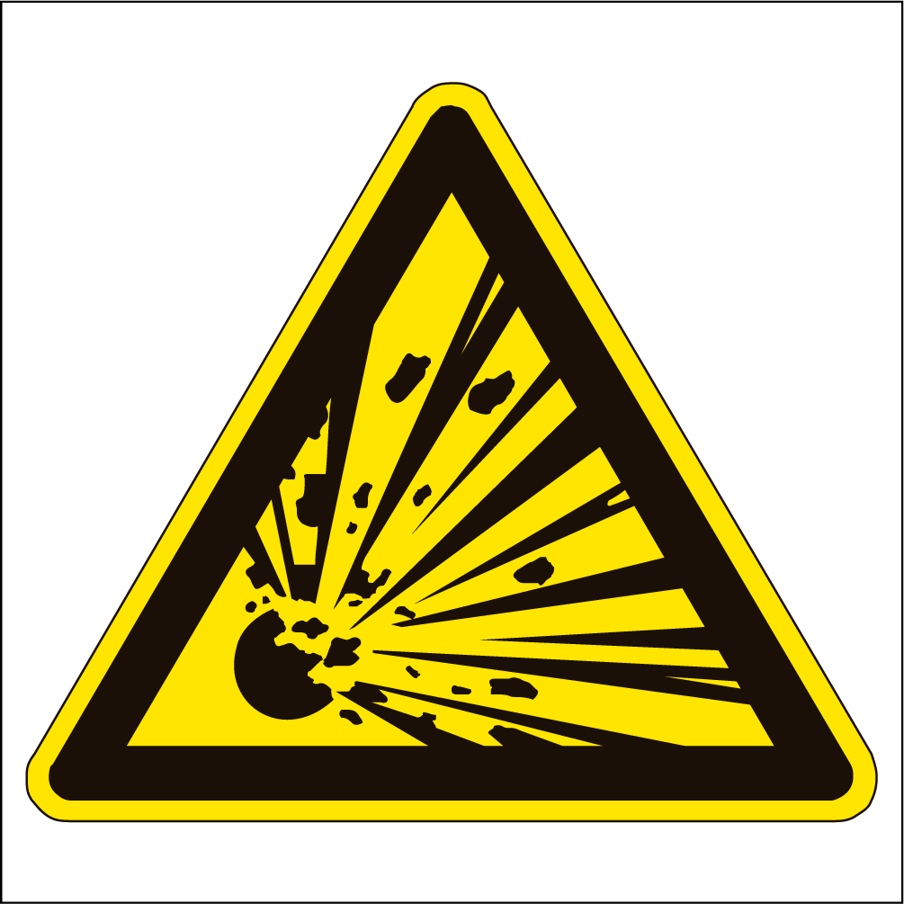
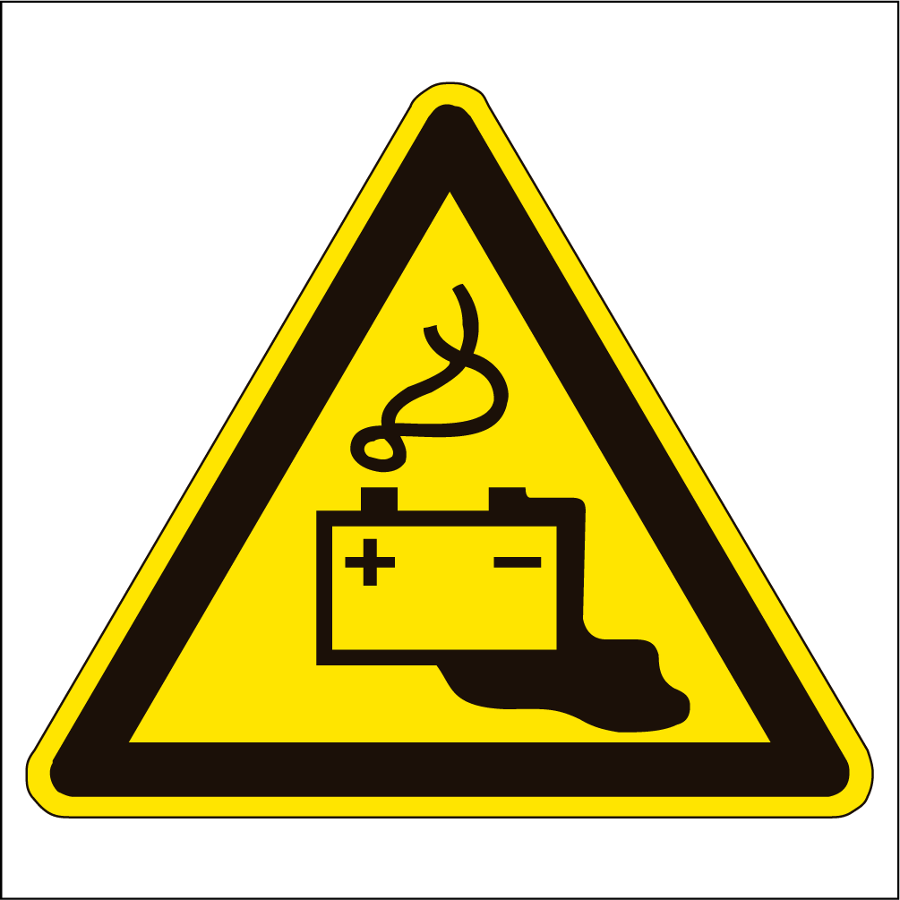
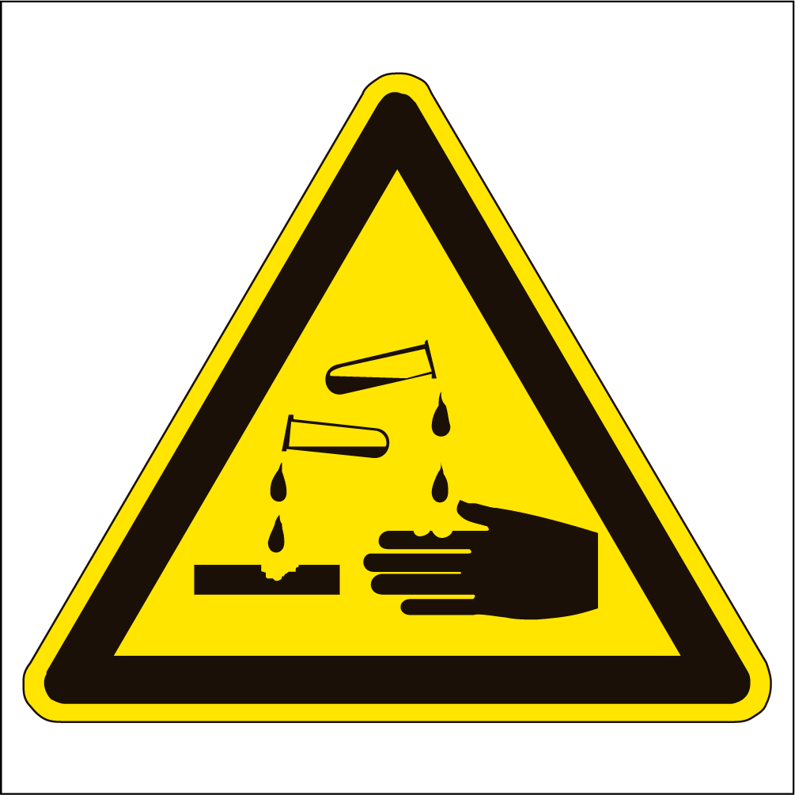

Safety instructions
Electric shock and accident consequences
-
Electric shock effect: When the current is lower than the conduction limit, corresponding electric shock response will occur, which may easily cause injuries due to uncontrolled limbs and loss of balance.
-
Electric shock effect: When the current is lower than the conduction limit, corresponding electric shock response will occur, which may easily cause injuries due to uncontrolled limbs and loss of balance.
-
Thermal effect: Burns, scorching and internal burns can occur at the current lead-in/lead-out points. As a result, the kidney is overloaded and even fatal injuries occur.
-
Chemical effect: Blood and cell sap become electrolytes and are electrolyzed. Severe poisoning occurs consequently. The poisoning can only be noticed after several days, with serious injury.
-
Muscle stimulation effect: All body functions and muscle movements are controlled by the brain through electrical stimulation of the nervous system. In case of high current through the body, muscle twitch occurs and the brain cannot control the muscular tissue.
-
Thermal effect in case of static short circuit: The sudden heating of the tool can cause the material to melt, resulting in burns.
-
Sparks due to short circuit: The metal melts quickly, generating splashing sparks. The temperature of the splashing metal particles exceeds 5000°C. It may cause burns and serious injury to eyes.
-
Arc generated when the live high-voltage line is connected or disconnected: Light radiation may cause electric ophthalmia.
For first aid measures for electric shock accidents, please refer to First aid and emergency treatment
Sheet metal repair
Welding machine required:
-
Power off the vehicle.
-
Power off the vehicle and let it stand for 5 min.
-
Power off the low-voltage electrical system. Refer to Power-off and power-on of low-voltage electrical system
-
Disconnect the positive bus and negative bus of high-voltage battery. Refer to High Voltage Distribution Wiring Harness Sub-assembly - Removal and Installation
-
Insulate and seal the positive and negative bus connectors of the high-voltage battery and wiring harness end connectors to prevent short circuit and ingress of foreign matters.
Operators shall wear insulating shoes and insulating gloves, and lay insulating pads in steps b, c and d.
-
-
Remove the high-voltage battery and high-voltage components that will be stressed during sheet metal correction of the vehicle body, safely store and then make corrections.
Welding machine not required: Remove the high-voltage battery and high-voltage components that will be stressed during sheet metal correction of the vehicle body, safely store and then make corrections.
Surface grinding: Dry grinding must be adopted for surface grinding, and wet grinding is strictly prohibited.
Airbag
Due to high inflammability and explosibility, please observe the regulations of No Fireworks.
There is a gas generator inside the airbag. Under normal circumstances, the high-energy propellant in the gas generator is completely sealed. Do not attempt to open the generator; otherwise it may ignite and deplete the propellant, generating high temperature gas at 2500°C, thus resulting in personal injury. If the airbag or gas generator is broken, wear protective equipment (such as protective clothing, protective gloves and goggles that can effectively prevent high temperature) all over your body before handling it.
Used airbags shall be packed in plastic bags that meet the requirements and disposed of according to local regulations. If the human body is in direct contact with the gas generator, wash it thoroughly with clean water and seek medical advice depending on the severity.
Dos for operation of airbags:
-
Store the component in an upright position.
-
Keep the component dry.
-
When handling the component, place the protective cover side opposite to the human body.
-
Place the protective cover of the component upward.
-
Carefully check the component for damage.
-
When connecting the airbags, stand on the side of the component.
-
Calibrate and maintain all equipment.
-
Be sure to wash hands after handling a deployed airbag.
Don'ts for operation of airbags:
-
Do not store with highly flammable materials.
-
The storage temperature shall not exceed 80 °C.
-
Do not store upside down.
-
Do not open the housing.
-
Do not be exposed to naked flames or heat.
-
Do not place anything on the surface covering.
-
Do not use damaged airbags.
-
Do not touch the gas generator on fire within 10 min at least.
-
Do not use any electronic detector on its wiring harness.
Refrigerant
Due to high inflammability and explosibility, please observe the regulations of No Fireworks.
Direct contact between the refrigerant and skin may cause frostbite.
Follow the instructions provided by the manufacturer. Wear appropriate protective gloves and goggles during operation.
If the refrigerant comes into direct contact with skin or eyes, immediately flush the contaminated area with clean water. In case of contact with eyes, wash with appropriate cleaning solution. Do not wipe. Seek medical help if you feel unwell.
Don'ts for refrigerant operation:
-
Do not expose the refrigerant bottle to sunlight or place it in a heat source.
-
Do not place the refrigerant bottle upright. Keep the valve downward during filling.
-
Do not refrigerate the refrigerant bottle.
-
Do not allow the refrigerant bottle to fall off.
-
Do not discharge the refrigerant into the air.
-
Do not mix different refrigerants, such as R12 (freon) and R134a.
Precautions for marking, packaging, transportation and storage of refrigerant:
-
The refrigerant container shall have firm and clear marks, including product name, trademark, manufacturer and its address, net content, batch number, product grade, standard number and "Keep away from the sun" mark specified in GB 191.
-
It shall be packed in special steel cylinders. Reusable cylinders shall be coated in aluminum white, and non-reusable cylinders shall be coated in sky blue.
-
The filling coefficient shall not be greater than 1.02 kg/L during filling of the cylinder.
-
The reused cylinders shall be maintained in positive pressure after use.
-
During loading, unloading and transportation, safety helmets shall be worn to prevent impact, dragging, falling off and direct exposure. The cylinder shall be transported in accordance with relevant national or regional regulations.
-
It shall be stored in a cool and dry place, kept away from heat sources, and strictly prohibited from sunlight and rain.
Coolant
Common coolants include isopropanol, ethylene glycol and methanol, which are highly inflammable.
When the coolant is heated, steam will be generated. In order to avoid inhalation and burns of steam, the coolant shall cool down before operation.
The coolant will be inhaled by the skin, which is harmful if the human body absorbs too much. It is very dangerous to swallow the coolant. In case of swallowing, seek medical advice immediately.
Do not come into contact with any public articles, food or drinking water source.
12 V battery acid
For models equipped with ordinary lead-acid 12 V batteries, the gas released during charging is flammable and explosive.

Brake fluid
Splashing the brake fluid to the skin or eyes will cause slight irritation. Therefore, avoid contact with skin and eyes as much as possible.
It is corrosive to the vehicle body paint. Therefore, please try to avoid dripping it on components with but not limited to the paint surface during operation. If it drops accidentally, wipe it clean as soon as possible.
Observe the followings for operation of the brake system:
-
For the brake pipeline joint with two fastening nuts, use two tools to unscrew or tighten the nuts at the same time to prevent the brake pipeline from being deformed under stress.
-
Ensure that the brake hose is naturally bent without distortion and deformation.
-
Secure the brake pipe with fixing clips to ensure that it does not come into contact with the positions with potential wear.
-
Keep the container for brake fluid clean.
-
The brake fluid shall be sealed for storage; otherwise, it will absorb the moisture in the air, resulting in the risk of braking failure during use.
-
Do not contaminate the brake fluid with mineral oil, or store unused brake fluid in a container that is filled with mineral oil.
-
Do not reuse the brake fluid discharged from the vehicle brake system.
-
Always use clean brake fluid or an acceptable substitute to clean hydraulic parts.
-
After disconnecting the brake pipeline, install a suitable end cap or plug immediately to prevent sundries from entering.
-
Use only brake pipeline joints with appropriate threads or vents.
-
When operating hydraulic parts, keep them absolutely clean.
Fuel
It includes gasoline and diesel. For fuel vehicles, gasoline is highly volatile and flammable, so exposure to the air shall be avoided, especially in confined spaces. The naked flame and heat shall be kept away from the fuel.
Kerosene
-
It is usually used as fuel for heating, solvent and detergent.
-
For inflammables, please observe the regulations of No Fireworks.
-
Swallowing will cause irritation to mouth and throat. This can be more dangerous if the liquid is inhaled into the lungs as a result of swallowing.
-
Contact with the skin will lead to dry skin and allergy or dermatitis. Slight discomfort may occur if it splashes into eyes.
-
Under normal conditions, it does not generate harmful vapors due to low volatility. Avoid exposure to high temperature. Avoid contact with the skin and eyes, and ensure good ventilation.
Lubricant and grease
Avoid prolonged or repeated contact of the body with the lubricant or grease. All lubricants and greases may be irritating to eyes and skin.
-
Used lubricating oil: Prolonged and repeated contact with mineral oil can result in loss of natural fat from the skin, causing dryness, irritation and dermatitis. In addition, used lubricating oil contains potentially harmful contaminants that may cause cancer. Appropriate skin protection methods and washing equipment must be provided.
-
Environmental precautions:
-
The combustion of used lubricating oil in smaller heaters or boilers is limited to units permitted by the design. In case of doubt, contact the relevant local government agencies and manufacturers of licensed products.
-
Do not discharge lubricants and grease into the environment.
-
Acids and alkalis
-
Materials generally used for 12 V batteries and cleaning, such as corrosive sodium carbonate and sulfuric acid. Avoid splashing on the skin, eyes and clothing. Wear appropriate protective aprons, gloves and goggles during relevant operations. Do not inhale the spray.
-
It is irritating and corrosive to the skin, eyes, smell and throat, causing burns and destroying ordinary protective clothing.
-
When in use, ensure that the eye lotion, showers and soap are available for emergency treatment in case of contact.
-
There shall be danger signs in the storage place of such articles.
Solvent
-
Common solvents include acetone, petroleum spirit, toluene, xylene and trichloroethane. They are used for cleaning and dewaxing of materials, paints, plastics, resins and diluent.
-
Some solvents are highly flammable.
-
Repeated or prolonged contact with the skin will degrease the skin and cause skin irritation and dermatitis. Some solvents may be inhaled by the skin, resulting in increased damage to human body.
-
Splashing into the eyes may cause severe irritation and blindness.
-
Short exposure to high concentrations of steam or fumes may cause irritation to eyes and throat, drowsiness, dizziness, headache, and in severe cases, loss of consciousness.
-
Repeated or prolonged exposure to excessive but lower concentrations of steam or fumes may result in more serious human injuries.
-
Choking the solvent into the lungs due to vomiting will have serious consequences.
-
Avoid splashing on the skin, eyes and clothing. Wear protective gloves, goggles and protective clothing during operation.
-
Ensure good ventilation during use, avoid inhalation of fumes, steam and spray, and keep the container tightly sealed. Do not use in a closed environment.
-
When organic solvents such as paint, adhesive and coating are sprayed, use special ventilation equipment or personal respiratory protection equipment under poor ventilation.
-
Do not heat or ignite the solvent unless specifically detailed by the manufacturer.
Adhesives and sealing materials
They are highly flammable. During use, please observe the regulations of No Fireworks, and pay attention to keeping the articles clean and tidy, such as covering seats with discardable paper. Use other containers with appropriate labels as far as possible, such as applicators and secondary containers.
Solvent adhesives/sealing materials
-
Follow the manufacturer's instructions for use. Refer to "Solvents" in this section for solvent instructions
-
Aqueous adhesives/sealing materials
-
Polymeric emulsions and rubber latex materials may contain small amounts of volatile poisonous and harmful chemicals. Avoid contact with the skin and eyes during use, and pay attention to ventilation.
Hot melt adhesives: They are harmless in the solid status. They may cause burns in melted state, or inhalation of poisonous fumes presents health hazards. Wear appropriate protective clothing and pay attention to ventilation during use. The heater shall have the temperature control function such as automatic cutoff.
Resin adhesives/sealing materials
-
Examples are epoxide and resin-based formaldehyde. Mixing shall be carried out in a well-ventilated place because harmful or poisonous volatile chemicals may be released.
-
Direct contact of the skin with untreated resin and hardener will result in absorption of poisonous and harmful chemicals, causing allergy and dermatitis. Splashings may cause injury to eyes.
-
Anaerobic cyanoacrylate adhesives (super glue) and other acrylic adhesives
-
Most of them are irritating, which can cause allergy or injury to the skin and respiratory tract. Some of them are irritating to eyes.
-
Follow the manufacturer's instructions for use to avoid contact with the skin and eyes.
Cyanoacrylate adhesives (super glue)
-
They shall not be in contact with the skin or eyes. If the skin or eye tissue is adhered, cover with a clean wet towel and seek medical advice immediately. Do not tear off the adhesion. Use in a well-ventilated area because steam can irritate the nose and eyes.
-
For dual-combination systems, refer to "Resin adhesives/sealing materials" and "Isocyanate adhesives/sealing materials" in this section
Isocyanate (polyurethane) adhesives/sealing materials
-
Personnel with asthma or respiratory sensitivity shall not dispose of or approach these materials to avoid allergic reactions.
-
Prolonged exposure can cause eye and respiratory irritation. High concentration can affect nervous system, such as sleepiness. Under extreme conditions, shock due to loss of consciousness may occur. Prolonged exposure to high concentrations of steam can cause adverse health effects. Prolonged contact with the skin will lead to degreasing and cause skin allergy and dermatitis in some cases. Splashings into the eyes can cause discomfort and possible damage.
-
Carry out spraying preferably at the exhaust vent, keep the steam and mist droplets away from the area for breathing, and wear appropriate gloves, goggles and respiratory protection equipment.
Foam materials
-
They are generally used for noise insulation. The treated foam materials are used for seats and decorative cushions, which can enhance the comfort of stepping on the carpet and also provide protection for feet in case of collision.
-
The combustion of foam materials will produce poisonous and harmful fumes. Do not smoke during foam operation. Do not use naked flame or electrical equipment before the steam is completely eliminated. Carry out thermal cutting of any foam material or specially treated foam material with good ventilation.
-
Persons who suffer from chronic respiratory disease, asthma, bronchial disease or allergies are not allowed to work in or near untreated materials. Their parts, steam or spray can cause direct irritation or allergic reactions, and may even be poisonous or harmful.
-
Do not inhale the steam or spray of foam materials. Such materials must be used with good ventilation and respiratory protection. Remove the respirator after the steam/spray is completely eliminated, otherwise the steam and spray will be inhaled into the human body.
Chemical materials
Chemical materials such as solvents, sealing materials, adhesives, paints, resin foam materials, 12 V battery acid, high-voltage battery electrolyte, coolant, brake fluid, lubricating oil and grease must be stored and handled carefully. They may be poisonous, harmful, corrosive, irritating or highly flammable, producing harmful fume and dust.
Dos for operation of chemical materials:
-
Please carefully read and follow the hazard warnings and protection requirements on the material container label, attached instructions or other instructions. The data sheet of material health and safety can be obtained from the manufacturer.
-
Remove chemical materials from the skin and clothing immediately after contamination. Wash or discard seriously contaminated clothing.
-
Organize work practices, wear protective clothing to avoid contact with the skin and eyes, and avoid inhalation of steam, mist, dust or fume, improper container labeling, and combustion and explosion hazards.
-
After handling chemical materials, wash hands before taking a break, eating, smoking, drinking or using toilets.
-
Keep the workplace clean, tidy and free of spillage.
-
Store chemical materials according to relevant national and local regulations.
-
Keep chemical materials out of the reach of children.
Don'ts for operation of chemical materials:
-
Do not mix chemical materials without the manufacturer's instructions. Some chemical materials will produce other poisonous and harmful chemical materials after mixing, thus releasing toxic fumes or becoming explosive.
-
Do not spray chemical materials, especially solvent-based materials, in closed space, such as when someone is in the vehicle.
-
Keep chemical materials away from heat sources or naked flames unless instructed by the manufacturer. Some materials are highly flammable, or may release poisonous or harmful fumes.
-
Do not leave the container open. The released fume will accumulate to poisonous, harmful or explosive concentrations. Some fumes are heavier than the air and will accumulate in confined spaces, such as wells.
-
Do not put chemical materials into unmarked containers.
Anti-corrosion materials
-
Due to high inflammability and explosibility, please observe the regulations of No Fireworks.
-
There are wide varieties of these materials, including solvents, resins or petroleum products, which must follow the manufacturer's instructions. Avoid contact with the skin and eyes. They shall only be sprayed in well-ventilated space, rather than confined space.
Fiber isolation materials
-
They are generally used for sound insulation.
-
Fiber surfaces and cut edges can irritate the skin, which is usually a physical rather than chemical reaction.
-
Take some measures, such as the use of gloves to avoid excessive contact with the skin.
Fluororubber
-
It is usually used to make parts such as O-ring, seal or cylinder gasket.
-
Fluororubber is a fluoroelastomer, which is a kind of fluorinated synthetic rubber materials.
-
It is very safe normally. However, in case of exposure to a temperature exceeding 400 °C, this material will not burn but will decompose, producing hydrofluoric acid and other substances. Hydrofluoric acid is very corrosive and can be directly absorbed into the human body by contact.
-
O-rings, seals or gaskets exposed to high temperature will be charred or turn into black viscous substances. Do not touch them or their attached objects in any case.
-
Make consultations firstly to determine if the affected O-ring, seal or gasket contains fluororubber or other fluoroelastomers. Take care in case of any uncertainty, because the raw materials of such parts are likely to be fluororubber or other fluoroelastomers.
-
If the parts containing fluororubber or other fluoroelastomers have been exposed to high temperature, carefully clean the potentially affected areas before working. Always wear disposable protective plastic gloves for hazards, neutralize the acid with steel wool and lime water (containing sodium hydroxide) before disposing of decomposed fluororubber residues and cleaning the area finally, wash the affected area with clean water, and carefully dispose of waste plastic gloves.
Soldering tin
-
Soldering tin is a mixture of metals with a melting point lower than that of structural metals (usually lead and tin). Heating the soldering tin with gas-air flame usually does not produce poisonous lead gas. Do not use acetylene-oxygen flame to heat soldering tin, because the lead gas poisoning human body is easy to be produced due to high temperature.
-
For use of any flame on the soldering tin surface covered with grease, some gases may be generated, and shall not be inhaled.
-
Be careful when removing excess soldering tin to avoid inhaling fine lead dust. Use respiratory protective equipment if necessary.
-
Collect spilled soldering tin and filings and remove immediately to avoid electrical short circuit and environmental pollution.
-
After using the welding tongs, wash hands or clothes in contact with soldering tin to avoid lead intake by the body.
Dirt and dust
Powder, dirt or dust may be irritating, harmful or poisonous. Avoid inhaling powdery chemical materials, or dust caused by dryness and friction. In case of poor ventilation, wear the suitable protective equipment such as breathing mask.
Since fine dust of combustibles may cause explosion, keep them away from naked flames or sparks.
Electric shock
Electric shock may result from electric leakage of high-voltage components, use of faulty components or incorrect operation of normal equipment.
The orange cables on the vehicle are high-voltage cables, and the components labeled with "High Voltage" are high-voltage components.
When the vehicle is in a high-voltage state or when such components are damaged, they are particularly dangerous. Do not touch them at will.
Precautions for electrical safety:
-
Ensure that the electrical equipment is well maintained and frequently tested. Mark faulty equipment and preferably remove.
-
Ensure that the wires, cables and connectors are not worn, kinked, cut, cracked or otherwise damaged.
-
Make sure that electrical equipment and cables do not come into contact with other liquids such as water and coolant.
-
Make sure that the electrical equipment is protected by the correct rated fuse.
-
Do not misuse electrical equipment or use it in any wrong way. It may be fatal.
-
Ensure that the cables of movable electrical equipment are not tangled or damaged, such as during the vehicle lifting.
-
Ensure that relevant staff have received basic first aid training.
In case of electric shock:
-
Turn off the power supply before touching the victim.
-
If it is unable to turn off the power supply, push or drag the victim away from the power supply by using dry insulating materials.
-
If the victim gets into a coma after being away from the power supply, perform correct cardiopulmonary resuscitation immediately.
-
Seek medical advice as soon as possible.
For hybrid and pure electric vehicles, observe the followings for operation of high-voltage system:
-
The components of high-voltage system must be repaired by qualified repair technicians. Improper repair may cause damage to personnel, vehicles or equipment.
-
The high-voltage system is subject to several hundreds of volts or more. During removal and installation of high-voltage components, wear protective articles at all times, such as insulating gloves and shoes.
-
Before repair, removal and installation of high-voltage components, deactivate the high-voltage power supply of the vehicle. Make sure that the negative cable of 12 V battery has been disconnected, and leave the vehicle standing for more than 5 min.
-
If the repair area is close to high-voltage components, turn off the ignition switch/Start switch of the vehicle before repair, and leave the vehicle standing for more than 5 min.
-
Do not place the high-voltage battery pack near naked flames or heat it.
-
The high-voltage battery pack contains acid electrolyte to avoid contact with eyes, skin and clothing. In case of accident, rinse with clean water and seek medical advice immediately.
-
In case of severe collision or waterlogging, the high-voltage battery pack may be damaged or the vehicle cannot be driven from the flooded area. Cut off the power supply on the premise of ensuring the safety. Deactivate the high-voltage power supply of the vehicle as appropriate, and disconnect the negative cable of 12 V battery (lead-acid battery or starter Fe battery), and take rescue measures as required. Keep a safe distance with the vehicle, and place high-voltage warning signs around the vehicle.
Charging
Electromagnetic radiation will be generated when the vehicle is charged, and the people with cardiac pacemaker or AED shall not get close to the vehicle (including getting in the vehicle and loading/unloading articles in the trunk).
Ensure that the socket of the charging connector is dry before charging, and the charging connection is not wetted by rainwater or other liquids during charging.
Fire
Many materials related to vehicle repair are highly flammable. Some materials will produce poisonous or harmful gases after burning.
For storage and disposal of flammable and explosive materials or solvents, strictly observe safety regulations, especially when approaching electrical equipment or performing welding operations.
Provide corresponding fire extinguishers for use of welding or heating equipment.
In case of a fire in the vehicle, carry out the following operations on the premise of ensuring the personnel safety:
-
Turn off the ignition switch/Start switch of the vehicle, and look for a dry powder fire extinguisher nearby to put out the naked flame.
-
Immediately call the local rescue center for rescue.
-
Deactivate the high-voltage power supply of the vehicle as appropriate, and disconnect the negative cable of 12 V battery (lead-acid battery or starter Fe battery).
-
If the fire is serious, keep away from the vehicle.
Fire extinguisher
-
The vehicle is equipped with a dry powder fire extinguisher, which is suitable for putting out the initial fire of oils, combustible gases, electrical equipment and other articles.
-
For some highly diffusive gases, such as hydrogen and acetylene gas, it is difficult to dilute the gas in the whole space after using the dry powder fire extinguisher. Dry powder residues will be left in the precision instruments and meters. In these cases, dry powder fire extinguishers are not suitable.
-
Follow the instructions on the fire extinguisher for use. Do not use the fire extinguisher improperly.
Noise
Some operations may generate high noise, so wear appropriate hearing protective equipment. Otherwise, it may cause damage to the hearing.
General repair shop tools and equipment
-
It is important that all tools and equipment are well maintained and safety equipment is correctly equipped as specified.
-
Do not use tools or equipment for purposes other than those as designed. Do not overload equipment such as cranes, jacks, axles and chassis or lifting ropes. Damage due to overload will not be immediately apparent and may cause fatal injury in the future use of the equipment.
-
Wear an appropriate breathing mask when using sand blasting equipment, handling asbestos-based materials or using spraying equipment.
-
Ensure adequate ventilation to control the dust, fumes and gases.
-
Do not use damaged or faulty tools or equipment, especially high-speed equipment such as grinders. Damaged grinder may be disassembled at any time, resulting in serious injury.
-
Wear goggles when using grinders, chisels or sand blasting equipment.
Suspended load
-
Do not use non-special equipment to lift the vehicle, so as to avoid injury caused by sliding of the vehicle.
-
There is always a risk when the load is lifted or suspended. Do not work under an load without support or suspension or under lifted load, such as a hoisted powertrain.
-
Ensure that lifting equipment such as lifts, jacks, cranes, axle seats and slings are suitable for the type of work and that they are in good condition and properly maintained.
Warning signs for vehicles, equipment or places
There are warning labels on the surface of some vehicle parts, equipment surfaces and in the display area in some places.
Do not move these warning labels, and make sure that contents on their surfaces are legible and unobstructed. These warning labels are used to remind relevant personnel. If they cannot be seen, these warnings may be ignored, resulting in safety hazards.
Some common markings and their meanings are shown below, while other unlisted markings shall be noted as well.
-
Prohibition
-
No naked flames

-
No smoking

-
No touching
-
No switching
-
Hazardous voltage/Electrical shock/Electrocution

-
Fire hazard or highly flammable

-
Burn hazard/Hot surface

-
Automatic startup

-
Toxic

-
Explosive

-
Battery hazard

-
Corrosive

Electrical safety
Hazardous current
-
AC above 25 V and DC above 60 V are dangerous.
-
The maximum locally allowable contact voltage (according to VDE standard) is 50 V AC and 120 V DC.
-
A current of about 5 mA flowing through the human body can be regarded as an "electrical accident". In this case, the person feels numb, but can still conduct away the current.
-
When the current of about 10 mA flows through the human body, it reaches the limit of conduction current. The human body starts to contract and cannot conduct the current anymore, and the current lasts longer accordingly.
-
Prolonged duration of 30 to 50 mA AC can cause respiratory arrest and ventricular fibrillation.
-
A current of about 80 mA flowing through the human body is considered "lethal".
-
AC voltage produces AC in the human body, which will cause the muscle tissue and heart to fibrillate.
-
The lower the frequency of AC voltage, the higher the risk.
-
AC will cause ventricular fibrillation, which will be fatal in case of no first aid.
Internal resistance of human body
-
For high current caused by high voltage, as the corresponding resistance in human body is very low, and the blood in all blood vessels acts as good conductor, different contact points in electrical accidents have different influences on human body accordingly.
-
The skin resistance varies greatly (depending on skin hardness, humidity, conductivity, etc.). However, for voltages above 100 V, the skin resistance is almost 0 Ω! The skin may be completely punctured.
-
For AC, it is fatal if the current stays in the heart for about 10-15 ms! (ventricular fibrillation).